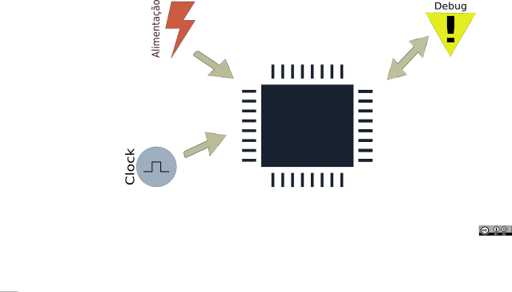

Indo direto ao ponto: Essa é uma série de posts sobre como levar uma ideia de projeto, que eventualmente já foi prototipada usando um Arduino e shields, a uma placa dedicada ao projeto. Na primeira parte trataremos do básico, estrutura e seleção de componentes.
O que faremos no decorrer da série
Faremos o desenvolvimento de uma placa com o footprint do arduino nano, com a mesma disposição dos pinos, porém utilizando um microcontrolador compatível com o novo Arduino Zero. Ou seja teremos um nano com mais memória, capacidade de processamento mas ainda integrado as ferramentas da família Arduino.
Essa placa será derivada do meu projeto arf154
Planejando a estrutura básica do projeto
Então você teve uma ideia e está empolgado em trazê-la a vida, bem vindo ao clube. Não existe uma receita definitiva para atingir o estágio de protótipo. Você pode até considerar aqueles vários shields em cima de um Arduino como um protótipo, mas aquele cenário está mais para uma prova de conceito. Um protótipo é um primeiro passo para a produção de uma placa que eventualmente se tornará um produto, ou não.
O primeiro passo é estabelecer o que é necessário na placa. Usualmente nós vamos partir de um conjunto de requisitos da sua placa uma descrição como:
Essa placa é uma placa de desenvolvimento compatível com o novo Arduino zero, porém possuindo o mesmo formato do Arduino nano
Sim é isso que faremos ;)
Outras placas irão inserir outras descrições. Eu prefiro inserir coisas como
Essa placa(produto) mede a temperatura...
Ao invés disso:
Essa placa(produto) utiliza um lm35
Diagrama de blocos
A partir de uma descrição do que se deseja para o projeto é interessante a construção de um diagrama de blocos. O diagrama de blocos dará uma visão de como o hardware estará distribuído na placa. Eu utilizo o Kicad no desenvolvimento do hardware dos meus projetos e nessa primeira etapa eu utilizo a ideia de folhas hierárquicas e de anotações no circuito para definir cada uma das partes. O resultado é depois aproveitado para o desenvolvimento de esquemáticos, em uma placa mais complexas vamos explorar um pouco mais disso, deixe uma sugestão para o próximo projeto nos comentários.
Seleção do microcontrolador
Um ponto muito importante é selecionar corretamente o microcontrolador com as características necessárias ao seu projeto. E não, o fato de o atmega328p estar no Arduino não o torna o escolhido para todos os problemas. Nossos amigos do Embarcados traçaram uma discussão sobre o assunto então não me estenderei no mesmo. Mas os pontos mais relevantes na seleção são:
-
Adequação ao projeto - Os periféricos atendem as conexões necessárias? Há poder de processamento suficiente pra executar os algoritmos que possivelmente serão executados? A potência consumida é adequada ao projeto?
-
Ferramentas - Há ferramentas gratuitas e de qualidade? Há um debugger de baixo custo no mercado?
-
Experiência anterior/código legado - Há tempo para desenvolver as habilidades necessárias para a nova escolha? Há uma quantidade de código escrita para um outro microcontrolador?
-
A documentação do fabricante é boa?
Esse primeiro filtro irá proporcionar uma seleção que possivelmente irá atender aos requisitos iniciais sem muito sofrimento.
Nesses tempos de internet nossa primeira tentativa é sempre realizar uma busca. O fabricante e o datasheet do componente são a fonte mais segura de informação na maior parte dos casos e possivelmente haverá um exemplo básico de como utilizar o componente. Aprender a ler e utilizar bem um datasheet é imprescindível, e não é tão difícil assim.
Particionamento de hw/sw
Nessa etapa é interessante fazer uma análise de que partes do sistema serão executadas via software(por software estou incluindo aqui também o firmware) e quais serão executadas via hardware. Não faz muito sentido nesse estágio implementar uma UART em software ao invés de selecionar um microcontrolador que possua a quantidade de interfaces necessárias. Esta escolha é muito dependente da aplicação em questão e carece de uma discussão mais prolongada tentarei abordar o tema no futuro. Um ponto a se deixar bem claro é:
O hardware executa a tarefa de modo independente e alivia o processamento, mas um bug no hardware custa muito mais pra ser corrigido.
Seções típicas de uma placa com microcontrolador
Algumas seções estarão presentes em todas as placas e serão modificadas conforme o desenvolvimento do produto avança. Tudo depende da fase em que estamos no desenvolvimento do mesmo, e qual o objetivo de um determinado protótipo. Eventualmente particionar em placas independentes pode ser interessante para testar opções, tudo depende de quanto tempo e dinheiro há disponível. As opções de prototipagem atuais tem facilitado bastante a nossa vida.
Vou me focar no microcontrolador. O circuito básico de um microcontrolador envolve os blocos da imagem:

Obviamente é necessário que exista alguma fonte de enrgia para o microcontolador o dispositivo será alimentado em corrente contínua com uma tensão que usualmente é de 3.3V, alguns microcontroladores irão operar em 5V. Adiante observaremos que os microcontroladores possuem mais de um grupo de pinos de alimetação. Essa separação tem o objetivo de evitar que ruído ultrapasse os domínios de alimentação.
Segundo Brian Kernighan debugar é duas vezes mais difícil que escrever o código e como sabemos que tudo dará errado até que alguma coisa resolva dar certo. Uma das primeiras coisas a se garantir é que teremos uma interface para testar e verificar o funcionamento do nosso sistema. A primeira função dessa interface é levar o nosso código até a memória de programa do microcontrolador mas ela também nos dará a possibilidade de executar o código passo a passo.
Outro elemento relevante é o clock. Microprocessadores são elementos que executam uma sequência de ações determinadas por seu conjunto de instruções e exigem que exista uma referência temporal para execução. No microcontroladores é comum acrescentarmos cristais pra servir como referência de tempo.
Próxima parte:
No próximo artigo dessa sequência trataremos exclusivamente sobre a seleção do microcontrolador, package e seu circuito de alimentação. E começaremos a utilizar o kicad pra construir a nossa placa.